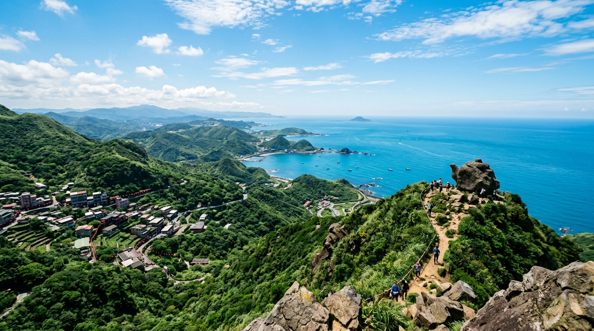
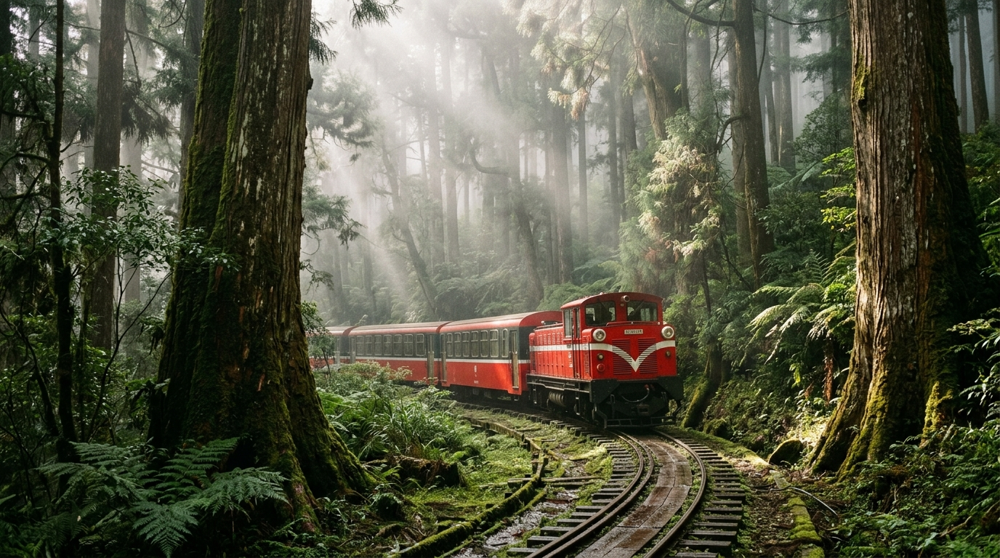
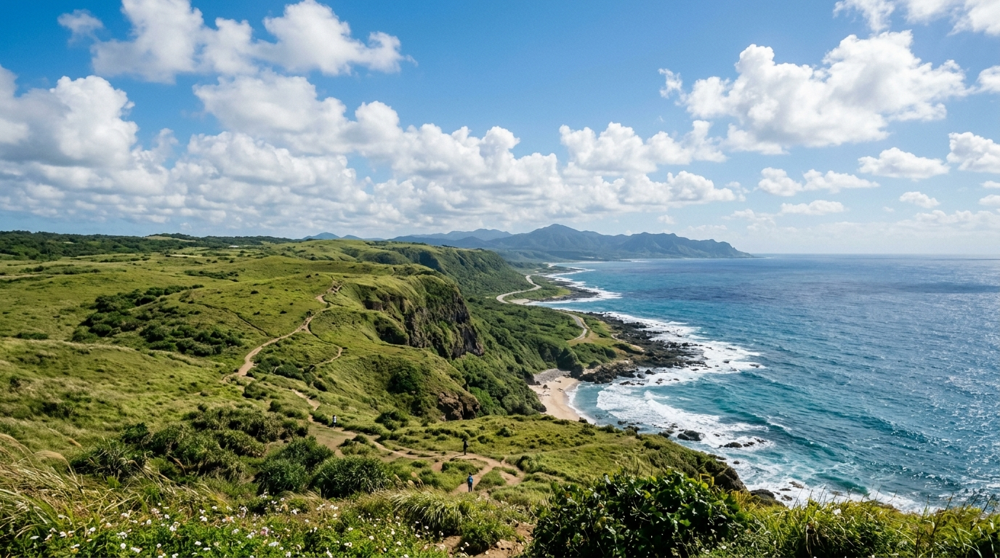

兩大一小・台中出發・4 天 3 夜絕美台灣之旅
上山下海，帶小孩放電的全新創意路線，阿雞幫老闆準備好啦！

食： 預算 4,500 元 (基隆廟口夜市、九份老街芋圓、八斗子海鮮)。
衣： 秋季北部多雨，必備雨具與防風外套；爬山請準備排汗衫與防滑運動鞋。
住： 預算 3,000 元 (基隆市區平價商旅或瑞芳周邊民宿)。
行： 預算 1,500 元 (台中至基隆來回油資與過路費)。
Day 1 直奔雨都： 台中出發 -> 基隆海洋廣場 -> 和平島地質公園玩水 -> 晚上逛廟口夜市
Day 2 山海大景： 瑞芳無耳茶壺山步道 (體力挑戰) -> 報時山棧道 -> 晚上九份老街賞夜景
Day 3 礦業人文： 黃金博物館 (小孩體驗淘金) -> 八斗子潮境公園看夕陽
Day 4 科教放電： 國立海洋科技博物館 -> 買連珍芋泥球伴手禮 -> 快樂返家

食： 預算 3,500 元 (奮起湖便當、茶園農家菜、烤山豬肉)。
衣： 阿里山海拔高溫差大，秋季必備厚外套、毛帽；山區容易起霧需注意保暖。
住： 預算 4,500 元 (石棹、奮起湖外圍平價民宿，或阿里山天主堂客棧)。
行： 預算 1,000 元 (台中至嘉義山區油資)。(另留 1000 門票費)
Day 1 茶園夕照： 台中出發 -> 嘉義觸口遊客中心 -> 隙頂二延平步道看雲海夕陽 -> 石棹入住
Day 2 老街鐵道： 奮起湖老街吃便當 -> 星空童話木屋 -> 搭乘一段阿里山森林小火車體驗
Day 3 神木森呼吸： 阿里山國家森林遊樂區 -> 姊妹潭 -> 巨木群棧道 -> 晚上早早休息
Day 4 迎向日出： 祝山觀日平台看日出 -> 下山順遊逐鹿部落吃烤肉 -> 快樂返家

食： 預算 3,500 元 (恆春鎮上平價美食：鴨肉冬粉、綠豆蒜、滿州地方小吃)。
衣： 南部依然溫暖炎熱，準備短袖、防曬衣與好走的步道鞋。
住： 預算 4,000 元 (滿州鄉或恆春鎮外圍的平價家庭民宿/青年旅館)。
行： 預算 2,500 元 (台中直奔屏東最南端，來回油資與過路費)。
Day 1 直奔南國： 台中出發 -> 國道3號到底 -> 恆春鎮上吃午餐補給 -> 滿州鄉入住
Day 2 奇岩大漠： 佳樂水看奇岩 -> 九棚大沙漠 (港仔大沙漠) 看海沙奇景 -> 晚上滿州看無光害星空
Day 3 草原迎風： 旭海大草原看無敵海景 -> 龍磐公園 -> 最南端地標打卡
Day 4 海生館遊： 屏東海洋生物博物館 -> 漫長車程返家